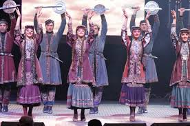
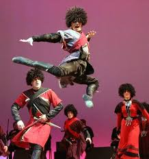
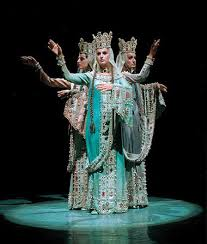
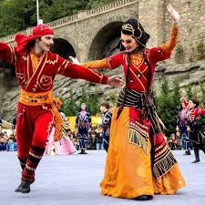
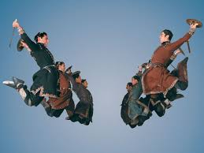
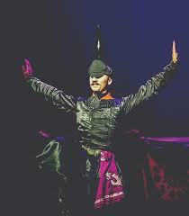
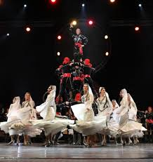
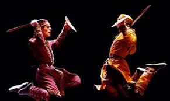

ქართულის ცეკვა
ქართულის ცეკვა არის ერთ-ერთი ყველაზე გამორჩეული ქართული ცეკვა, რომელიც ასახავს საქართველოს ისტორიასა და კულტურას. ის ხასიათდება მაღალი ხარისხის ნაბიჯებით, სიწმინდით და დინამიკით.
ხევსურული ცეკვა
ხევსურული ცეკვა გამოირჩევა ენერგიულობითა და სამხედრო ელემენტებით. ის ასახავს ხევსურეთის მთის ხალხის შეუდარებელ სიმამაცეს და კულტურას.
სამაია
სამაია არის სიმბოლური ცეკვა, რომელიც შესრულებულია სამ ქალის მიერ და გამოხატავს სამების და სილამაზის ხატს. სამაია ხშირად ასოცირდება დედოფალი თამარასთან.
მთიულური
მთიულური — ქართული ხალხური ცეკვების ჯგუფი, რომლებიც ერთნაირ ტექნოლოგიურ მასალაზე (მრავალფეროვანი ჩაკვრები, ცერილეთები, მუხლილეთები, ბრუნები, ხტომისებური მოძრაობები) არის აგებული. მთიულური ცეკვაც, ხევსურულის მსგავსად მთაში იღებს სათავეს და მისი შინაარსიც სატრფიალო მეტოქეობას ეფუძნება. თუმცაღა განსხვავება ისაა რომ მთიულურში, პაექრობა მოცეკვავეთა ორ ჯგუფს შორის მიმდინარეობს. ეს არის საბრძოლო ხელოვნებისა და ოსტატობის ნამდვილი ზეიმი, რომლის მუსიკალური ზომაც, უმეტეს შემთხვევაშია 2/4.
განდაგანა
განდაგანა აჭარული წარმოშობის ცეკვაა. ასრულებს ძირითადად ქალ-ვაჟი, თუმცა არსებობს მისი ჯგუფური შესრულების ვარიანტიც. ამ ცეკვის ძირითადი ელემენტებია: ორი დაკვრით გვერდული გადაადგილება, ე.წ „ჩაკვრის“ ტიპის სპეციალური სახასიათო მოძრაობა და სხვა. გამოირჩევა ულამაზესი, მკვეთრი ფერის კოსტიუმებით. შედგება სამი — ნელი, ჩქარი და ისევ ნელი ნაწილისაგან. მუსიკალური ზომაა 6/8.
ხორუმი
ხორუმი, საბრძოლო ხასიათის ეს ცეკვა, საწყისს გურიის/აჭარის რეგიონიდან იღებს. თავდაპირველად მას მხოლოდ რამდენიმე ადამიანი ასრულებდა, მაგრამ დროთა განმავლობაში შემსრულებელთა რაოდენობა გაიზარდა და ხორუმის თანამედროვე ვარიანტში, ოცდაათიდან ორმოცამდე მოცეკვავეს შეუძლია მონაწილეობის მიღება. მიუხედავად იმისა, რომ მოცეკვავეთა შემადგენლობა შეიცვალა, თავად ცეკვის სტილი პირვანდელი და უცვლელი დარჩა. ცეკვა იწყება რამდენიმე მოცეკვავის სცენაზე შემოსვლით, ისინი განასახიერებენ მეომრებს, რომლებიც ბრძოლის წინ დიდი სიფრთხილით ზვერავენ საომარ ტერიტორიას. შემდგომ ამისა კი სცენაზე ლაშქრის დანარჩენ წევრებსაც უხმობენ. ეს ცეკვა მაყურებელს ერთდროულად გადმოსცემს: ძიების, ბრძოლისა და მტერზე გამარჯვების სიხარულით გამოწვეულ განცდას. ხორუმი ცეკვაში განსახიერებული სიმბოლოა, ქართველ მებრძოლთა ვაჟკაცობისა და დიდებულებისა.
კინტოური
კინტოური ქალაქური ტიპის ცეკვათა რიცხვს განეკუთვნება და თავისი არსით ძველი ქალაქის ცხოვრებას ასახავს, თავად ცეკვის სახელწოდება, ძველი თბილისის კოლორიტი წვრილი ვაჭრების, კინტოების სახელს უკავშირდება. მოცეკვავეთა სამოსიც კინტოებისთვის დამახასიათებელია, შავი ატლასიას შარვალ-ხალათი და ვერცხლის ქამარში გაჩრილი აბრეშუმის წითელი ხელსახოცი. კინტოები ამ ხელსახოცებში გამოაკრავდნენ ხოლმე მყიდველის მიერ არჩეულ საქონელს (ძირითადად ხილს ან ბოსტნეულს) ასაწონად. კინტოებისთვის დამახასიათებელი გამჭრიახობა, სიმკვირცხლე და კომუნიკაბელურობა კარგადაა ასახული „კინტოურის“ ქორეოგრაფიულ გადაწყვეტაში.
ფარცა
ეს ცეკვა გურიის რეგიონიდან იღებს სათავეს, გამოირჩევა უსწრაფესი და ულამაზესი ილეთებით. მისი დინამიური ქორეოგრაფიული ქარგა, ურთულესი ხტომითი მოძრაობები, მოცეკვავეების მიერ სცენაზე შეკრული კამარა, მაყურებელში ერთდროულად იწვევს აღფრთოვანებისა და ზეიმის განცდას.
ხანჯლური
ხანჯლური ქართული ხალხური ცეკვაა; ასრულებენ ხანჯლებით. აგებულია მთიულური ცეკვის ელემენტებზე. წარმოადგენს ცეკვისა და ჟონგლიორობის სინთეზს. საცეკვაო ილეთების შესრულებასთან ერთად მოცეკვავე ხანჯლებს მაღლა ისვრის, ისევ იჭერს და ოსტატურად ასობს იატაკზე (მიწაში).